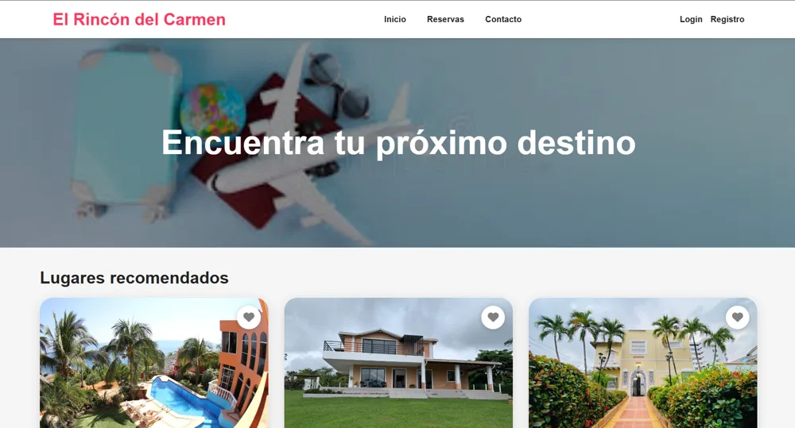
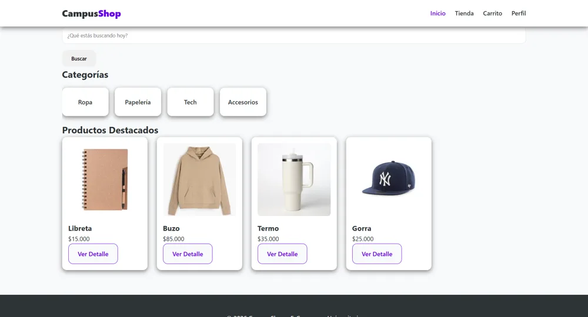
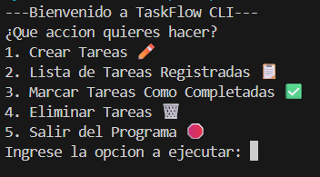

SYSTEM ONLINE
Soy desarrollador de software junior y me apasiona crear aplicaciones modernas, rápidas y funcionales. Me especializo en desarrollo web, Java, Python, JavaScript y bases de datos, con interfaces atractivas. Estoy abierto a oportunidades laborales, prácticas y proyectos como freelance.
Soy desarrollador junior bilingüe (inglés B2) y estoy certificado en Python por Kodland. Actualmente curso formación avanzada en desarrollo de software de alto rendimiento en Campuslands.
He creado algoritmos, juegos con Pygame Zero y Turtle, y proyectos web con HTML, CSS y JavaScript. Trabajo en equipo bajo marcos ágiles (SCRUM), pienso de forma lógica y me adapto rápido a los retos. Me motiva aplicar lo que aprendo para crear soluciones tecnológicas reales y optimizadas.
Proyectos
Tecnologías
Horas de estudio
Descubrí mi interés por el desarrollo y comencé a aprender los fundamentos de la programación.
Aprendí a crear juegos en Python con Pygame Zero y me certifiqué con Kodland.
Profundizo en HTML, CSS y JavaScript en Campuslands y trabajo en equipo con metodología SCRUM.

Contexto: sitio web para reservar alojamientos turísticos.
Mi rol: diseñé y programé la interfaz con HTML, CSS y JavaScript.
Resultado: página con buscador de destinos, lugares recomendados con favoritos y acceso de usuarios.

Contexto: tienda en línea de productos universitarios pensada para estudiantes.
Mi rol: maqueté y estructuré las vistas de inicio, catálogo, carrito y perfil con HTML y CSS.
Resultado: sitio responsive con categorías, filtros, carrito de compras y proceso de pago.

Contexto: aplicación de consola para organizar tareas personales o de equipo.
Mi rol: desarrollé funciones en Python y trabajé en equipo con SCRUM.
Resultado: menú interactivo para crear, listar, completar y eliminar tareas, con datos guardados en JSON.
Creo sitios web modernos, rápidos y adaptados a celular, tablet y computador.
Programo aplicaciones a la medida con Java y Python.
Diseño bases de datos SQL para guardar y consultar información de forma ordenada.
Diseño interfaces claras, modernas y fáciles de usar.
Campuslands (en curso)
Kodland
Academia Cambridge
Gimnasio Superior Empresarial Bilingüe
Escríbeme con el formulario o por cualquiera de mis redes y conversemos sobre tu proyecto.